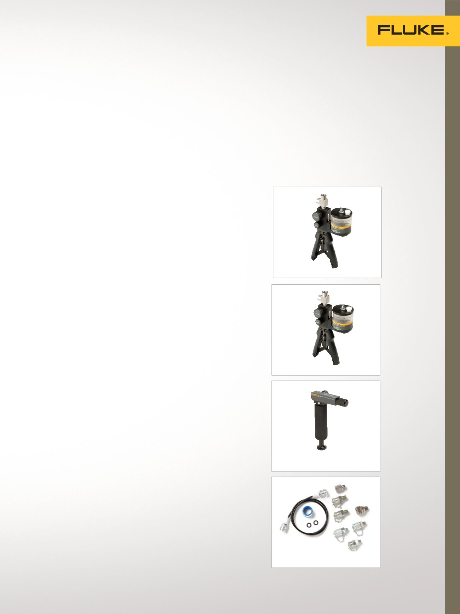

700PTP-1
700LTP-1
700HTP-2
23
Software/Zubehör
Software
750 SW DPC/TRACK2-Software™
Die Software DPC/TRACK2-Software
enthält eine spezielle Datenbank zur
Verwaltung der Kalibrierdaten, die Sie
beim Verwalten Ihrer Instrumente und
beim Erfüllen der Dokumentationsan-
forderungen von Qualitätsprogrammen
und -vorschriften unterstützen kann. Mit
DPC/TRACK2 und einem dokumentieren-
den Prozesskalibrator 754 können Sie
die folgenden Aktionen ausführen:
•
Verwalten Ihrer Bestände an Mess-
stellenbezeichnungen (TAGs) und
Instrumenten, Planen
von Kalibrierungen
•
Erstellen von messstellenspezifischen
Prozeduren mit Anweisungen
und Kommentaren
•
Laden dieser Prozeduren auf Ihren
dokumentierenden Prozesskalibrator
und späteres Hochladen der
Ergebnisse auf Ihren PC
•
Auswählen und Ausführen
automatisierter, konsistenter
Prozeduren im Feld; automatisches
Erfassen der Ergebnisse
•
Prüfen der Kalibrierhistorie Ihrer
Messstellen (TAGs) und Instrumente
und Drucken von Berichten
•
Importieren und Exportieren von
Instrumentendaten und -prozeduren
als ASCII-Text
•
Importieren von Daten, die mit
älteren Versionen von DPC/TRACK
aufgenommen wurden
700G/Track
Benutzerfreundliche Software für
die Verwaltung von Instrumenten
und Kalibrierdaten.
•
Ermöglicht das Herunterladen von
Daten und das Einstellen von Konfi-
gurationen der Manometerserie 700G
•
Konfigurieren der Abtastrate, Dauer
und Messeinheiten bei
der Protokollierung
•
Hochladen fernprotokollierter
Messungen und Anzeige oder Export
von Messdaten
Log
Ware
Nutzen Sie ein tragbares Einkanal-
Digitalthermometer Fluke 1502A/1504
als Echtzeit-Datenlogger.
•
Erfasst Echtzeitdaten
•
Berechnet Statistik und zeigt
anpassbare Diagramme an.
•
Ermöglicht dem Anwender die
Auswahl von Startzeiten, Stopzeiten
und Probenintervallen
MET/TEAM
®
– Software für die
Mess- und Prüfmittelverwaltung
Erledigen Sie mehr Arbeit in
weniger Zeit.
•
Browserbasierte Software zur Kali-
brierung und Messmittelverwaltung
•
Vollständig integriert mit der MET/
CAL
®
Software
•
Microsoft SQL Server-Datenbank
•
Hochgradig anpassbar
•
E-Mail-Automatisierung
•
Kalibrierung vor Ort
Zubehör
700HTP-2 Hydraulik-
Testpumpe
Das Modell 700HTP-2 ist für die
Erzeugung eines Drucks von bis zu
10.000 psi/700 bar konzipiert. Mit-
hilfe der einstellbaren Ablassventile
700PRV-1 können Sie den Druck von
1360 psi bis 5450 psi begrenzen.
Verbinden Sie die Pumpe mithilfe des
Testschlauchs 700HTH-1 mit dem zu
testenden Gerät.
700PTP-1 Pneumatik-
Testpumpe
Bei dem Modell 700PTP-1 handelt es
sich um eine tragbare Druckpumpe,
die für die Erzeugung eines Vakuums
bis –11,6 psi/–0,8 bar oder eines
Überdrucks von 600 psi/40 bar
konzipiert ist.
700LTP-1 Niederdruck-
Testpumpe
Handbetriebene Druckpumpe, die
für die Erzeugung eines Vakuums
bis –13 psi/–0,90 bar oder eines
Überdrucks von 100 psi/6,9 bar
konzipiert ist. Ideal für
Unterdruckanwendungen geeignet,
für die exakte Unterdrucktests
erforderlich sind.